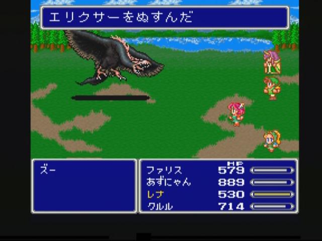

8月7日：『シュメール神話集成』
公開日：
")
- 出版社/メーカー: 筑摩書房
- 発売日: 2016/12/22
- メディア: Kindle版
- この商品を含むブログを見る
世界四大文明のひとつであるメソポタミア文明。この「肥沃な三日月地帯」に栄えた文明の基礎を築いたのが、チグリス・ユーフラテス川の下流域に生活していたシュメール人であった。彼らは独特の楔形文字を使って粘土板に神話や叙事詩を刻み、その世界観は後世の周辺地域に絶大な影響を与えたと言われる。旧約聖書の「ノアの方舟」へと継承された「洪水伝説」のほか、「イナンナの冥界下り」「ウルの滅亡哀歌」など、神話を中心に16の文書を精選。他では読むことのできない重要な原典に、充実の注・解説を付したアンソロジー。
居酒屋でチビチビ読んでたのであまり進まなかったのだけど……結局半年かけて読んだのか。
ウンチを肛門で切断し、手を洗い、クロネコからコメとレトルトカレー、『シュメール神話集成』を受け取った。またトイレこもる
— だるやなぎ准将 (@daruyanagi) 2016年2月17日
最後の箴言がクソ面白かった（読了 / “https://t.co/l18wWK57GL: シュメール神話集成 (ちくま学芸文庫): : Book” https://t.co/DYChvU2Vza
— だるやなぎ准将 (@daruyanagi) 2018年8月7日
結構面白いところが多くて、ページに折り目がいっぱいできた（自分は興味深いところに折り目を付ける癖がある。だから図書館で本を借りられないのだ！）。でも、神さまの関係は一度まとめないとわかんねーな。暇なときにでもやるか。
本書には16のお話が収録されているとのことだけど……圧巻はやっぱり「ウルの滅亡哀歌」かな。あんまりこういう神話で感動したことはないんだけど、繰り返される嘆きはさすがに胸を打つというか、目の奥が熱くなるのを感じた。いつか東京やニューヨークも瓦礫と化す日が来るのだろうか。
あとはこまごま。
- シュメールの時代にも「マスト」ってあったんだ？――ラガシュで、シュメールの国土の大きなマストであるギルスで（『ババ女神賛歌』）
- イナンナはたぶんかわいい

- こいつってシュメール神話出身だったんだな。――アンズー：嵐の鳥。ライオンの頭を持つ鷲（？）。ニンギルス神のお使い（ズー - Wikipedia）
- ババ女神のそこはかとないババァ感
- ミトゥム武器ってどんなんだろ？――母親ニンガルの胎内から誕生した際、すでにシタ（cita）とミトゥム（mitum）という2つの鎚矛を手にして生まれた（イナンナ - Wikipedia）
古代の武器って、やっぱり棍・棒に原始的な刃物を付けたものが主流だったのかな。弓矢は結構昔からあるっぽいけど。シュメール人って割と現代人との隔たりを感じさせないから、なんとなくイメージが難しいな。普通にパンとかビールとかチーズとか食ってるし。――あ、一つ忘れていた。
- ビールは文明！！